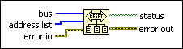

ResetSys Function
Owning Palette: GPIB 488.2 Functions
Requires: Base Development System
Performs bus initialization, message exchange initialization, and device initialization.
Refer to GPIB Function Defaults for more information about the timeout and address defaults.

 Add to the block diagram Add to the block diagram |
 Find on the palette Find on the palette |